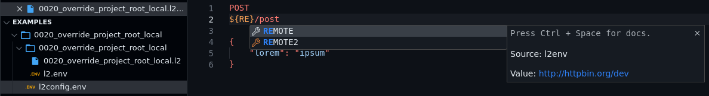
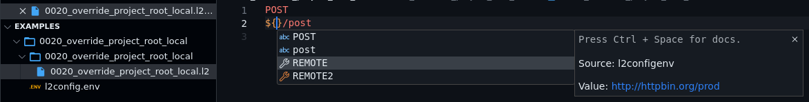

Programmatic ally Executing an l2 file¶
Useful Options¶
The l2 command provides some helpful options for
extension developers. The options are:
--nocoloror-ndisables colored output in httpie-go (in CLI);--output=<target.jsonor-owrites a structured JSON output to the target file (without colors). The following is the content structure:
{
"logs": ...,
"headers": ...,
"body": ...
}
logs: String value. Contains ASCII-color-coded log output. Control the logging level through-voptionheaders: A string consisting ofHTTP header: Valuepairs separated by newline.body: A string containing the HTTP response. Usually a JSON or HTML response.
Note
Right now, all the three values in the JSON are strings. In the future, we may transform the values further to provide a more parse-friendly structure.
The Commands¶
Execute current file¶
Combining the options -n and -o, we get:
l2 -n -o /tmp/lama2.json my_api.l2
The command mentioned above disables HTTPie colors,
writes the whole transaction to a structured JSON,
while also printing details into stdout.
The extension author can simply read the file, and display the contents to users appropriately. For an example, see Lama2 for VSCode (also see Marketplace page).
LSP Language services for L2 extension¶
Initilize server¶
Overview:
The server initialization is the first step to establish communication with the LSP. This process involves starting a server that listens for incoming JSON RPC 2.0 requests.
Steps:
1. Starting the Server:¶
Launch the server using the following command:
l2 --lsp
Separate Process for Persistence: Typically, language servers run as a separate process to ensure they remain active and responsive. Our implementation follows this best practice, ensuring the server remains available for the duration of your coding session.
Interaction via stdin/stdout: Communication with our server is facilitated through stdin (standard input) and stdout (standard output). This approach is in line with the Microsoft Language Server Protocol guidelines, ensuring compatibility and seamless integration with various editors and IDEs.
Reference Implementation: For a deeper dive into how we've implemented the server initialization in our extension, check out this section of our codebase. This will provide you with a hands-on understanding of our approach and might serve as a valuable reference if you're looking to extend or adapt the functionality.
See how Lama2Code initializes the server
2. Making a Request:¶
Send a JSON RPC 2.0 request to the server's stdin. Here's an example of an initialization request:
{
"jsonrpc": "2.0",
"id": 1,
"method": "initialize",
"params": {
"processId": null,
"clientInfo": {
"name": "MyEditor",
"version": "1.0.0"
},
"rootUri": "file:///path/to/workspace"
}
}
See how Lama2Code makes a request
3. Receiving a Response:¶
After processing, the server will send a response back. This response can be read from the server's stdout.
Environment variable autocompletion¶
Overview:
The LSP server offers a custom method, suggest/environmentVariables, which provides autocompletion suggestions for environment variables.
This method combines data from both l2.env and l2config.env to present a unified JSON representation of the environment variables.
Steps:
1. Making a Request¶
Here's an example request to obtain all environment variables:
{
"jsonrpc": "2.0",
"id": 2,
"method": "suggest/environmentVariables",
"params": {
"textDocument": {
"uri": "file:///home/Lama2/elfparser/ElfTestSuite/root_variable_override/api/y_0020_root_override.l2"
},
"position": {
"line": 1,
"character": 2
},
"searchQuery": ""
}
}
Checkout how Lama2Code requests for environment variables
2. Receiving a Response:¶
The server will respond with a JSON object containing the environment variables. Extension authors can then read this response from the server's stdout and present the variables to users in a suitable format.
{
"id": 2,
"result": {
"AHOST": {
"src": "l2env",
"val": "http://127.0.0.1:8000"
},
"BHOST": {
"src": "l2configenv",
"val": "https://httpbin.org"
}
},
"jsonrpc": "2.0"
}
Filtering Results:
To narrow down the environment variables based on a specific prefix, you can modify the searchQuery parameter in the previous request. This doesn't represent a new request but rather showcases how to adjust the existing one for more specific results.
For instance, to retrieve variables relevant to "BH", adjust the searchQuery parameter as follows:
{
"searchQuery": "BH"
}
This will filter the results to only include environment variables that contain "BH".
When l2.env is present

When both l2.env and l2condig.env is present

Go to Example
Syntax Highlighting¶
The VSCode plugin implements a rudimentary syntax highlighting for .l2 files. We use Iro for syntax grammar generation. Find more details if interested.